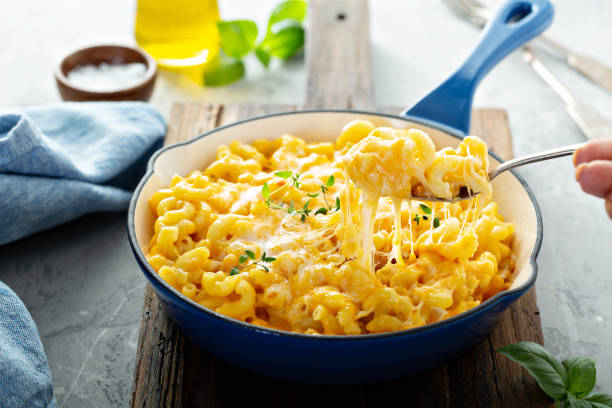

Mac and Cheese

What is Mac and Cheese?
Mac and Cheese is a dish consisting of cooked macaroni pasta combined with a cheese sauce, generally being cheddar. It is typically prepared as a baked good, or on the stovetop for a saucier version.
Ingredients
- Macaroni
- Butter
- Milk
- Cheese
- Optionally: bread crumbs and flour
Steps
- Boil the noodles, drain them, and then transfer them to a baking dish
- Make the cheese sauce, pour the sauce over the noodles, then stir
- Make the topping, spread it over macaroni and cheese, and sprinkle with paprika
- Bake the mac and cheese at 350 degrees F for 30 minutes or until the topping is a golden brown
Home Page